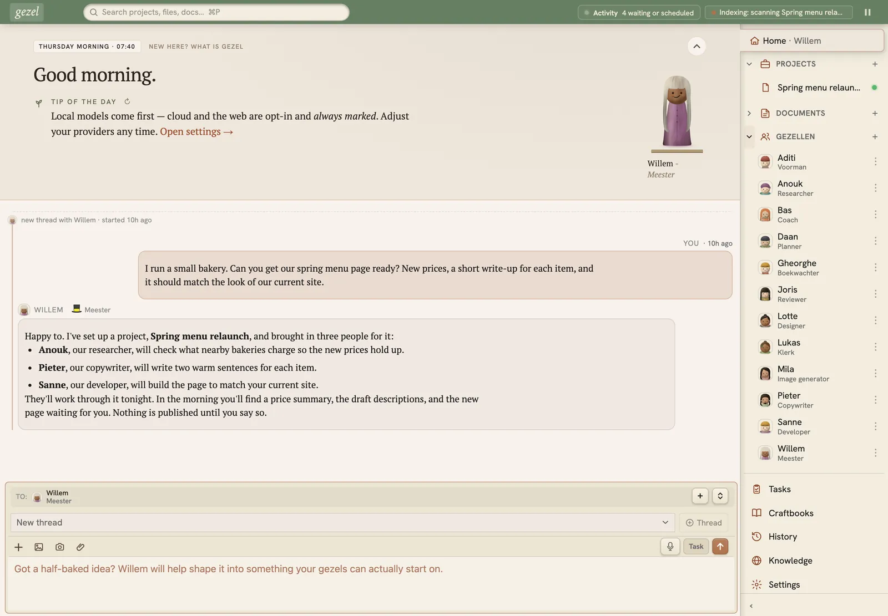

Gezel
Hand off a job tonight. Review it in the morning.
A crew of AI helpers, including a researcher, a writer, and a developer, working on your own computer. They leave reports and suggested changes waiting for you, and your files only change when you say so.
gezel.com ↗